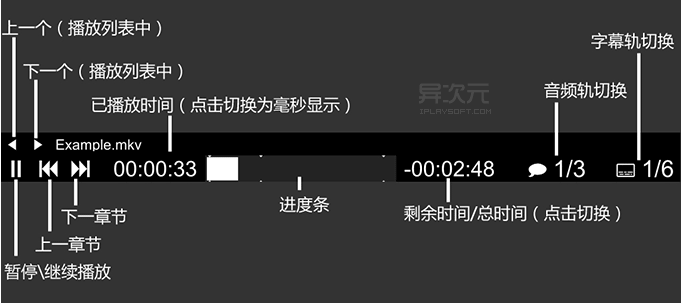

工具分享
电脑软件
woker
- windows绘图工具：
edraw、visol
- 翻墙工具：
- 脑图制作工具：
- mindmanager
- mac: mindnode
- 截图工具：
- picpick https://picpick.app/
- snipaste https://www.snipaste.com/
- 屏幕画笔：
- Pointofix 下载地址：https://www.pointofix.de/download.php
- ssh远程连接工具：
- windterm https://github.com/kingToolbox/WindTerm
- Xmanager Enterprise 6 https://www.zdfans.com/html/21350.html
- putty
- CRT
- 虚拟机创建：
- vmware
- vitrualbox
- linuxoffice工具：
- WPS
- 文本编辑器：
- sublime
- EmEditor文本编辑工具
- 文本处理
- everything 本地搜索引擎
- beycmpsc win32文本比较工具
- mkdown:
- Typora Typora自动上传图片文件 https://blog.csdn.net/linysuccess/article/details/104573813
- MWeb 在mac下的 markdown Ulysses 编写工具
- Markdown Nice 在线网页转 markdown https://www.mdnice.com/
- FPD文档编辑：
Adobe Acrobat Professional
pdf阅读器，后面文档很多都是加密的，每次 打开需要输入密码，可以用“悦书pdf阅读器”进行解密。ctrl + alt +d 去水印
- 桌面分享
- vnc server
- 远程开发：
- Visual Studio Code Insiders
- 切换hosts
- SwitchHosts https://github.com/oldj/SwitchHosts/releases
- Chrome插件 Host Switch Plus
- SwitchHosts https://github.com/oldj/SwitchHosts/releases
娱乐
- MPV 轻量播放器
- PotPlayer 播放器 https://potplayer.daum.net/?lang=zh_CN
- IDM https://www.internetdownloadmanager.com/ 多线程下载
- zyplayer 跨平台桌面端视频资源播放器 https://github.com/Hiram-Wong/ZyPlayer
- 模拟器
- 雷电模拟器
视频
- 录屏相关：
- obs https://obsproject.com/zh-cn/download 配合 https://existential.audio/blackhole/ 视频参考：https://www.bilibili.com/video/BV1hG4y187Es/?spm_id_from=333.337.search-card.all.click&vd_source=70e4e839cabca1314b02190e14da328a
- camtasia studio 录屏(1280*720像素)
- oCam
- ev 录屏
视频封装工具
小丸工具箱 可以无损封装视频
m3u8视频辅助工具 可下载版权保护的ts视频并合并
N_m3u8DL.zip [https://truelim.lanzoui.com/b0cldysed](https://truelim.lanzoui.com/b0cldysed) 密码:azw9
桌面设备
- 电动升降桌
- 🏷️屏幕挂灯：BenQ Screen Bar （明基屏幕挂灯）
- 🏷️显示器：LG35WN73A-B（乐金35寸显示器）
- 🏷️音响：Edifier R1280DB Speaker（漫步者 R1280DB）
- 🏷️配件：OrbitKey Nest（OrbitKey收纳盒）
- 🏷️装饰：Grid Studio Apple iPhone（苹果手机元件画）
- 🏷️显示器支架：Balolo Setup Cockpit （Balolo胡桃木支架）、爱格升支架
- 🏷️鼠标：Logitech MX Master3（罗技MX Master3鼠标）
- 🏷️键盘：Logitech MX Keys（罗技MX 键盘）Keychron K2（京造K2）
- 🏷️鼠标垫：Harber London Desk Mat（Harber London鼠标垫）
- 🏷️桌子：Flexispot EC5（Flexispot EC5升降桌）
- 🏷️椅子：Flexispot BD10 Chair （Flexispot BD电竞椅）
详解
MPV-高手首选的跨平台全能视频播放器！开源、简约、键盘流、配置灵活
视频播放器一直以来都不少，各系统平台下都有各自佼佼者，比如 Win 下的 PotPlayer 等，但是要找一个跨平台、简洁、开源、免费、且性能和功能兼备的 却并不容易。
这里给大家推荐 MPV。MPV 是一个基于 MPlayer 和 mplayer2 的开源极简全能 播放器。支持各种视频格式、音频解码、支持特效字幕（电影动漫的ass特效字 幕都没啥问题），不仅支持本地播放，同样支持网络播放。重点是 MPV 具有多 系统平台支持、命令行、自定义、GPU 解码、脚本支持等特点……
高手们的挚爱！MPV 极简万能播放器
由于默认情况下，MPV 播放器简约到连 GUI 界面都没有提供，需要通过命令行 或配置文件设置，因此它较少出现于大众媒体的视野，但它配置灵活、性能优秀， 支持硬件解码，播放高清分辨率的 4K 视频也可以很流畅，轻巧且强大的特点一 直使它成为玩软高手、技术爱好者们的挚爱。
甚至，得益于开源，基于 MPV 还衍生出来一大批第三方播放器，比如最近火热 的 Mac 平台上的 IINA，以及 Baka MPlayer、bomi、mpc-qt、xt7-player-mpv 等，它们的“核心”其实就是 MPV。这恰恰说明 MPV 才是无数开发者和技术爱 好者心目中的神器。
下面我们一起来看看，MPV 到底是怎样的一款播放器吧……
MPV 下载与安装
MPV 可以用源代码编译安装，也可以直接下载别人编译好的包使用，官网也提供 了由不同开发者编译好的包供大家下载。不同的系统安装方法也不同，而且也有 多种安装方法，下面仅提供简单的示例。
1、Windows
点击这里下载 mpv 播放器 (Windows 64位) | 下载 Win 32 位，下载后解压到 安装路径即可。如果你还需要设置文件关联和自动播放，可以下载并运行 「mpv-install.bat」 进行关联 (其中的 mpv-uninstall.bat 可以进行卸载)， 这里有具体说明。
2、Linux
常见的发行版，如：Ubuntu、Debian、Arch，都有 mpv 的相关源，请确保显卡 驱动、多媒体解码组件已经安装。注：其它发行版见官方安装页面，这里以 Linux Mint 下安装为例（基于 Ubuntu 的衍生版本也可以用下列命令）。
终端依次执行下列命令：
sudo add-apt-repository ppa:mc3man/mpv-tests sudo apt-get update sudo apt-get install mpv
3、macOS (Mac OS X)
在 Mac 上安装 mpv 的方法有几种，下面是最常用的两种方式：
点击这里下载 mpv 播放器 macOS 版，解压并移动到“应用程序”文件夹内即可。
如果你安装了 Homebrew（开发者一般都认识），也可以直接在终端里用命令行进行安装：
brew install mpv --with-bundle brew linkapps mpv
第一句是下载安装 mpv，快慢因网络而异，第二句是在「应用程序」里面创建 mpv 的软链接
安装好后，如果你想要 mpv 关联某种格式的视频 (双击后直接用 mpv 播放)， 则可以在 Finder 里选中一个视频文件，右键点击「显示简介」，在“打开方 式”处选「mpv.app」，再点击「全部更改」就可以了。
当然，使用 Mac 的同学你也可以试试 IINA 这款播放器，它正是基于 mpv 而生的。
本地观看 youtube 视频
mpv https://youtube.com/xxx
mpv 播放器怎样使用？
虽然 MPV 并没有提供官方的 GUI 界面，没有菜单，但它提供 OSC 操作界面和 快捷键用于操作，只要关联好文件格式，使用 mpv 打开视频后，使用上其实也 非常的简单方便。
1、OSC 界面操作说明

2、快捷键
操作主要通过键盘快捷键（区分大小写）调整。下面介绍一些常用的 mpv 快捷 键（更多的快捷键请阅读官方参考手册）。
鼠标操作
-------------------------------------
鼠标左键双击 进入/退出全屏
鼠标右键单击 暂停/继续播放
播放控制
-------------------------------------
快捷键 作用说明
[] : 播放速度
, : 逐帧播放
. : 按下播放，回弹暂停
p 和 Space : 暂停、继续播放
/ 和 * : 减少/增加音量
9 和 0 : 减少/增加音量（数字键盘区的9、0不可用）
m 静音
{ } 大幅度快进后退 或小副度 [ ]
← 和 → : 快退/快进5秒
↑ 和 ↓ : 快进/快退1分钟
< > 上一个/下一个（播放列表中）
Enter 下一个（播放列表中）
l 设定/清除 A-B循环点
L 循环播放
小L 设置循环播放点
s 和 ctrl +s : 截屏
Ctrl + s 连续截屏 保存在桌面
q 或 command q : 停止播放并退出
Q 保存当前播放进度并退出，播放同样文件从上次保存进度继续播放。
O : 切换OSD模式，会显示进度
w 和 e : 降低/ 提高摇移范围。#放大缩小全屏图像
d --------------循环丢帧状态: 无 / 跳过显示 / 跳过解码
7/8 调整饱和度
视频控制
-------------------------------------
_(下划线) 循环切换可用视频轨
A 循环切换视频画面比例
Alt+0 Command+0 on OS X 0.5倍源视频画面大小
Alt+1 Command+1 on OS X 1倍源视频画面大小
Alt+2 Command+2 on OS X 2倍源视频画面大小
delete键 是否显示进度条
音频控制
-------------------------------------
# 循环切换可用音频轨
Ctrl + Ctrl - 音轨延迟+/- 0.1秒
字幕控制
-------------------------------------
V 关闭/开启字幕
j J 循环切换可用字幕轨
x z 字幕延迟 +/- 0.1秒
r 和 t : 上移/下移字幕位置
u : 字幕样式override
窗口控制
-------------------------------------
T : 窗口始终置顶
f : 进入/退出全屏
ESC : 退出全屏
Command+f OS X Only 切换全屏
------------------
常用
[]播放速度
<逐帧播放
>按下播放，回弹暂停
-------------------
shift+T最前端显示
PageUP下一章节
PageDown上一章节
Right前进5秒
Left后退5秒
Up前进10秒
Down后退10秒
RightClick/Space/P暂停播放
f/LeftDoubleClick全屏
ESC退出全屏
q/command+q退出播放器
O显示进度
[]播放速度
w/e好像是剪裁
r/t字幕位置
u字幕样式override
s/ctrl+s截图
d反交错开关Deinterlace
h/k电视频道(没什么用)
J切换字幕
L某一段重复播放（鬼畜）
Z/X字幕延迟
v隐藏显示字幕
M静音
<逐帧播放
>按下播放，回弹暂停
1对比度-
2对比度+
3亮度-
4亮度+
5伽马-
6伽马+
7饱和度-
8饱和度+
9、/减小音量
0、*增大音量
3、mpv 播放多个文件 (播放列表)
MPV 支持播放列表文件（如：m3u）。如果需要临时播放多个文件，Windows 下 （打开MPV，选中多个文件拖入窗口），Linux 和 OS X下则选中多个文件，右键 选中MPV打开。鼠标右键单击“上一个”或者“下一个”按钮可以临时显示当前 播放列表。
如果需要将该目录的文件全部添加进MPV的播放列表中，命令行跳转到该目录。
使用命令： mpv *.*
4、mpv 播放音乐音频
如果音频文件内嵌音乐封面图片，MPV 也可以同时显示的，比如 MP3 格式。
5、命令行调用 mpv
各平台下的 mpv 均能支持命令行调用来进行播放，具体命令参数见官方参考手 册。（注：参数调用需要加“–”，配置文件内使用则不需要加“–”）。
Mac OS X 平台下通过终端调用输出相关反馈信息需要添加参数：–terminal
6、幻灯片播放图片文件
除了视频和音乐之外，mpv 其实还支持幻灯片的方式来播放图片。拖入多个图片 进入MPV，它就会以一秒显示一张图片的方式进行播放。
mpv 配置文件介绍
mpv 的默认设置并不适合与所有人，软件提供众多自定义选项，既能用于命令行， 也能用于配置文件。它们可以让 MPV 更加贴合用户自己的使用习惯。这里介绍 的一些常用的选项只是 MPV 官方参考手册中很小一部分。
1、mpv 配置文件的存放路径
注：请运行一次 MPV 后再去打开配置文件夹，否则可能提示文件夹不存在。
- Windows 平台
%APPDATA%/mpv/
打开方式：Win+R 运行 %APPDATA%/mpv/
Linux 平台
~/.config/mpv/
打开方式：终端执行命令：nemo ~/.config/mpv/
注：nemo 为Linux Mint 自带文件管理器，其它发行版文件管理器或有不同，如：Ubuntu 带的是 nautilus
- Mac 平台
~/.config/mpv/
打开方式：终端执行命令：open ~/.config/mpv/
2、配置文件
mpv.conf 是 mpv 的主配置文件，其它相关的配置文件也会放置在上述的路径里 面。注：配置文件中的内容只需根据实际需要选择性使用即可，#号起头的注释 无需填写。这有一个 mpv 配置文件的示例。 https://github.com/mpv-player/mpv/blob/master/etc/mpv.conf
2.1 mpv.conf （播放器主配置文件）
#窗口 #窗口始终置顶 ontop #关闭窗口装饰（无边框） no-border #视频窗口最大化适应（当视频分辨率大于屏幕分辨率时，限制窗口大小为屏幕分辨率对应比例，避免完全占满屏幕） autofit-larger=85%x85% #如播放的为图片文件，则给定秒数显示文件（默认值为一个图像文件显示1秒） image-display-duration=1 #轨道选择 #指定优先使用音轨（DVD使用ISO 639-1两位语言代码，MKV、MPEG-TS使用ISO 639-2 三位语言代码） alang=zh,chi #指定优先使用字幕轨（DVD使用ISO 639-1两位语言代码，MKV、MPEG-TS使用ISO 639-2 三位语言代码） slang=zh,chi #播放控制 #播放循环方式（inf 只有一个文件时循环该文件，有多个文件时则循环播放列表） loop=inf #视频 #视频硬件解码API选择（因系统环境、显卡、驱动等差异硬件解码API方式（阅读官方参考手册查询）各有不同，建议实际测试验证后再填入可用API），默认值为 no（使用软件解码），auto 为自动。 hwdec=auto #音频 #设定程序启动后的默认音量 volume=80 #播放音频文件时显示含有的图像（如封面），默认值为 attachment，不显示值为 no audio-display=attachment #音量最大值设定（范围：100.0-1000.0），默认值为130 volume-max=150 #加载视频文件的外部音频文件方式。（fuzzy 加载含有视频文件名的全部音频文件） audio-file-auto=fuzzy #字幕 #加载视频文件的外部字幕文件方式。（fuzzy 加载含有视频文件名的全部字幕文件） sub-auto=fuzzy #截屏 #截屏文件格式（可选：png、ppm、pgm、pgmyuv、tga、jpg、jpeg） screenshot-format=jpg #截屏文件名模板 screenshot-template="%F-ScreenShot-%02n" #截屏文件保存路径 screenshot-directory=~~desktop/ #截屏jpeg 质量（0-100），默认值为90。 screenshot-jpeg-quality=100
更多选项见官方参考手册章节：OPTIONS
2.2 input.conf （按键功能设定）
input.conf 是按键方面的配置文件，可以参考这个示例。
#鼠标滚轮向前滚动减少音量2 MOUSE_BTN3 add volume -2 #鼠标滚轮向后滚动增加音量2 MOUSE_BTN4 add volume 2
更多选项见官方参考手册章节：COMMAND INTERFACE
旋转视频
在 mpv 工作目录创建目录 portable_config
input.conf 文件内容
f cycle fullscreen # 同内建方案 Ctrl+LEFT cycle-values video-rotate "0" "270" "180" "90" # 视频输出逆时针旋转90° Ctrl+RIGHT cycle-values video-rotate "0" "90" "180" "270" # ~~~~~~~~逆~~~~~~~~~~~
mpv.conf 文件内容
#关闭窗口装饰（无边框） no-border
2.3 scripts 脚本文件夹
作用：MPV 启动时，保存在该目录中的 Lua 脚本将被自动加载并执行，这里是一些 Lua 脚本示例。
推荐示例：autoload 脚本
作用：自动将该目录的中的全部文件加入到 MPV 的播放列表中
编写说明见官方参考手册章节：LUA SCRIPTING
2.4 lua-settings/osc.conf (OSC / On Screen Controller) 脚本控制
作用是可以配置 OSC 的显示。下面为选项注释和选项：
# 以总时间显示代替剩余时间显示 timetotal=yes # 以毫秒显示时间码 timems=yes
如果想使用老版的经典 OSC 布局，请在osc.conf 中填入下列设定：
layout=box seekbarstyle=slider deadzonesize=0 minmousemove=3
更多选项见官方参考手册章节：ON SCREEN CONTROLLER
录视频
接的相机录播的，直接terminal做透明，可以看这个视频 节目录制花絮：https://www.bilibili.com/video/BV1Va411d7Qf/?vd_source=70e4e839cabca1314b02190e14da328a
emacs 窗口透明
(defun loop-alpha () (interactive) (let ((h (car alpha-list))) ((lambda (a ab) (set-frame-parameter (selected-frame) 'alpha (list a ab)) (add-to-list 'default-frame-alist (cons 'alpha (list a ab))) ) (car h) (car (cdr h))) (setq alpha-list (cdr (append alpha-list (list h)))) ) ) ;; (loop-alpha)
显示按键操作
MacOS: KeyCastr
OBS
画面
画面布局
- 在
来源中选择显示器采集或者macOS Screen Capture或者窗口采集- 使用
窗口采集注意：- 不能把窗口最小化
- 屏幕允许时，尽可能保持窗口可见
- 使用
- 观众看到摄像头、采集卡、外接摄像机画面，在
来源中选择视频采集设备
图层：来源中的内容叫做"图层"，最上面会覆盖下面的内容
- 对画面不满意，按住鼠标左键可以对图层进行大小、位置、方向的调整
- Opotion + 鼠标左键：可以进行裁剪
- 还原：对图层调整太多时，选中对应图层，右键
变换再选择重置变换 - 图位置锁定：点击锁即可
- 图层自动适应屏幕：选中对应图层，右键
变换再选择比例适配屏幕
视频位置：文件 –> 显示录像
画质
在 控制按钮 中选择 设置
- 视频选项：画布清晰度、输出分辨率
- mac 推荐都改为 1920x1080，常用帧率FPS值 60，再重新调整画面布局
- 教学演示、画画、唱歌等场景帧率用 25 PAL 足够
- mac 推荐都改为 1920x1080，常用帧率FPS值 60，再重新调整画面布局
Mac 本地声音问题
mac 13以下版本
mac 最新版本无法录制本地音频，这里可以借助虚拟音频软件解决，可以用如下任意一种：
- BlackHole: Virtual Audio Driver：https://existential.audio/blackhole/
- VB-CABLE Virtual Audio Device：https://vb-audio.com/Cable/
安装 BlackHole，默认安装就好。
- 安装后，点击 mac 界面小喇叭
声音偏好设置，可以在输出输入中看到 BlackHole 设备。
设置：
- 打开
音频 MiDI 设置或者Command + 空格搜索 midi。 - 点击左下角
+号，选择创建多输出设备，勾选声音设备，并保持 BlackHole 置于下方，可以勾选漂移校正- 如，外置耳机、BlackHole 2ch
- 打开
声音偏好设置， 输出选多输出设备，输入选直播录制时的麦克风- 不直播时，选择自己日常用的音频设备即可
- 打开直播录屏软件 OBS
但上面我们无法听到声音，观众能听到。
可以用在 OBS 混音器中右击高级音频设置，灵活设置对应音频的监听、输出的关系：
- 监听：控制主播自己是否听到音频
- 麦克风：关闭监听，录自己的声音
- 输出：控制直播观众是否听到音频
- 桌面音频：监听并输出
- 关闭监听：主要听不到声音，但是直播观众可以听到
如：
不同场景防卡
直播
编码器(Encoder)：根据自己设备进行调整 关键帧(Keyfram)：Twitch: 2、Youtube: 2 比特率(Bitrate)：Twitch 6000~8000
- mac
- 编码器：x264 或 苹果 VT H264 硬件编码器
- 比特率：6000 Kbps
- 关键帧间隔：2s
- Intel
- 编码器：苹果 VT H264 硬件编码器
- 比特率：6000 Kbps
- 关键帧间隔：2s
录制 关注录像文件大小
编码器(Encoder)：根据自己设备进行调整 关键帧(Keyfram)：可以深度设置为 1 比特率(Bitrate)：数字越大越清晰、文件越大、可以降低或调高
- 编码器：x264 或 苹果 VT H264 硬件编码器
- 比特率：15000 Kbps
- 关键帧间隔：1s
视频压缩
OBS实现横屏、竖屏同时直播、录制
插件：Aitum Vertical plugin for OBS 29+：https://aitum.tv/#vertical